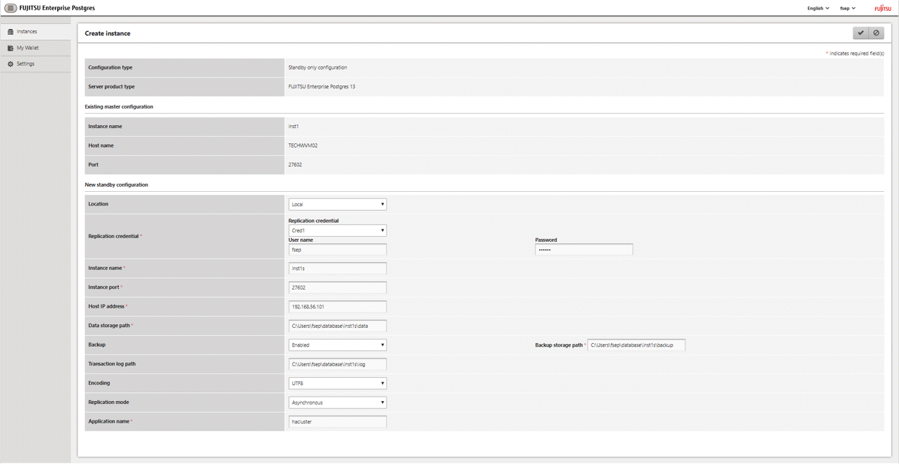
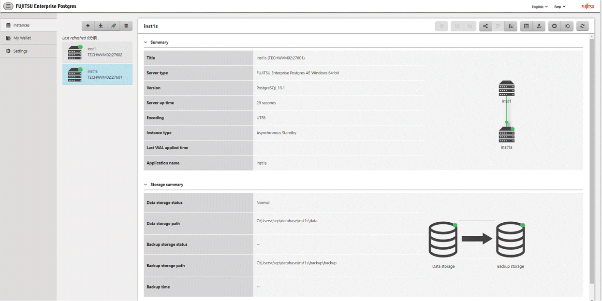

Follow the procedure below to create a standby instance.
In the [Instances] tab, select the instance from which a standby instance is to be created.
Click .
Enter the information for the standby instance to be created. In the example below, a standby instance is created from instance "inst1".
The instance name, host address and port of the selected instance are already displayed for easy reference.

Enter the following items:
[Location]: Whether to create the instance in the server that the current user is logged in to, or in a remote server. The default is "Local", which will create the instance in the server machine where WebAdmin is currently running.
[Replication credential]: The user name and password required for the standby instance to connect to the master instance. The user name and password can be entered or selected from the Wallet. Refer to "Appendix G WebAdmin Wallet" for information on creating wallet entries.
[Instance name]: Name of the standby database instance to create.
The name must meet the conditions below:
Maximum of 16 characters
The first character must be an ASCII alphabetic character
The other characters must be ASCII alphanumeric characters
[Instance port]: Port number of the standby database instance.
[Host IP address]: The IP address of the server machine where the standby instance is to be created. This information is needed to configure the standby instance to be connected to the master.
[Data storage path]: Directory where the database data will be stored
[Backup storage path]: Directory where the database backup will be stored
[Transaction log path]: Directory where the transaction log will be stored
[Encoding]: Database encoding system
[Replication mode]: Replication mode of the standby instance to be created ("Asynchronous" or "Synchronous")
[Application name]: The reference name of the standby instance used to identify it to the master instance.
The name must meet the conditions below:
Maximum of 16 characters
The first character must be an ASCII alphabetic character
The other characters must be ASCII alphanumeric characters
Click  to create the standby instance.
to create the standby instance.
Once the standby instance is created successfully, select standby instance in the [Instances] tab. The following page will be displayed:

Note
Backups are not possible for standby instances in WebAdmin. As a result,  and are disabled and no value is shown for [Backup storage status] and [Backup time].
and are disabled and no value is shown for [Backup storage status] and [Backup time].
If using WebAdmin to manage Mirroring Controller, the message below may be output to the server log or system log in the standby instance. No action is required, as the instance is running normally.
ERROR: pgx_rcvall failed (16491)ERROR: pgx_rcvall: backup of the database has not yet been performed, or an incorrect backup storage directory was specified
Replication credential (user name and password) should not contain hazardous characters. Refer to “Appendix H WebAdmin Disallow User Inputs Containing Hazardous Characters”.